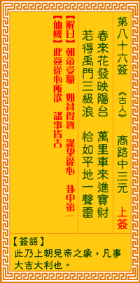

观音灵签第八十六签 【商辂中三元】 |
 | |||
春来花发映阳台 万里舟行进宝来 跃过禹门三级浪 恰如平地一声雷 |
||||
| 【吉凶】 | 大吉签 | 【宫位】 | 申宫 | |
| 【签语】 | 此卦上朝见帝之象，凡事大吉大利也。 | |||
| 【解曰】 | 朝帝受职 如贫得宝 谋望从心 卦中第一 | |||
| 【仙机】 | 此签家宅从心所欲，诸事皆吉。 | |||
| 【详解】 | 春天时百花盛开，在阳光投射下楼台呈现美丽的疏影，有人自万里之外驾船送来满满的珍宝;相信鱼跃龙门时来运转之时，就似春雷一声乍响，震撼了大地。 帝朝受职，如贫得宝，望用从心，签中第一。此签帝朝受职之象，凡事遇贵则吉。 本签者。帝朝受职之象。凡百事兴者遇贵则吉利者也。春来花发。是百花争妍斗艳之刻。万里舟行进宝来其声声之旺也。如跃过禹门三级浪。恰如平地一声雷响起 者。易言之。帝朝受职如贫得宝望用从心签中第一。 此签有”念兹在兹”之意。意味当事人，任重道远。孔子的高徒颜回说过：”舜何人也?予何人也?有为者亦若是。”如果有心想要做好事，就要坚守决心，时时充 实自我不断学习，并贯彻到底。很多事是一种机缘，环环相扣。此时也许看不出来，却极有可能是日后成大就的必经过程之一。切勿小看自己，每个人在这个社会 上都是栋梁之才。相信道德为一切的根本，不管经过多久，也不会退转初衷。 | |||
| 【典故】 | 商辂，明朝浙江人，父名商琳，早逝。尚辂从小由母亲抚养，天资聪慧。古代科举（考试）制度分乡试，省试，殿试（等于现代的小学， 中学，大学考试），第一名为解元，会元，状元。尚辂在这三次考试中都获得第一名，故称连中三元。《三元记》传奇故事 | |||